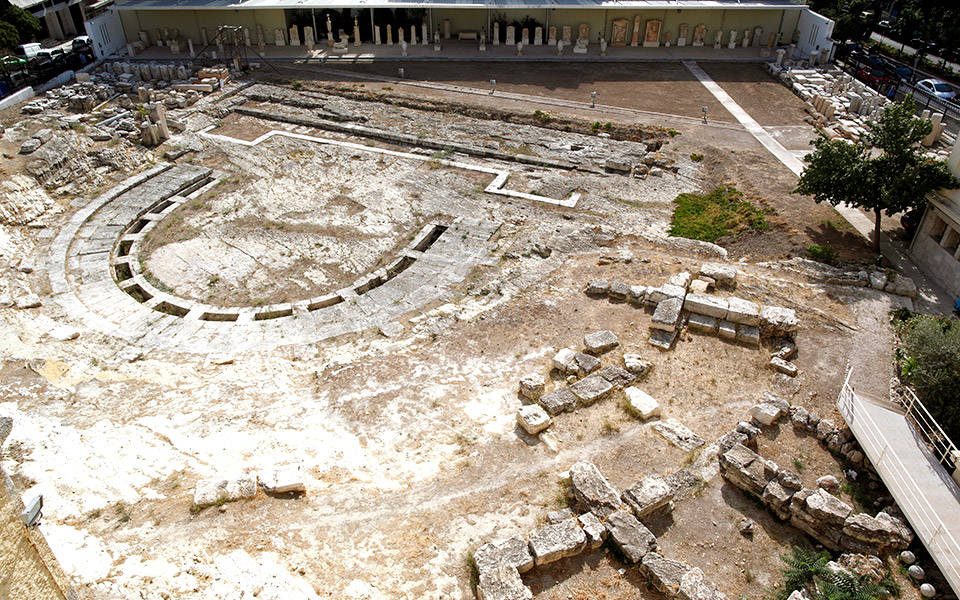
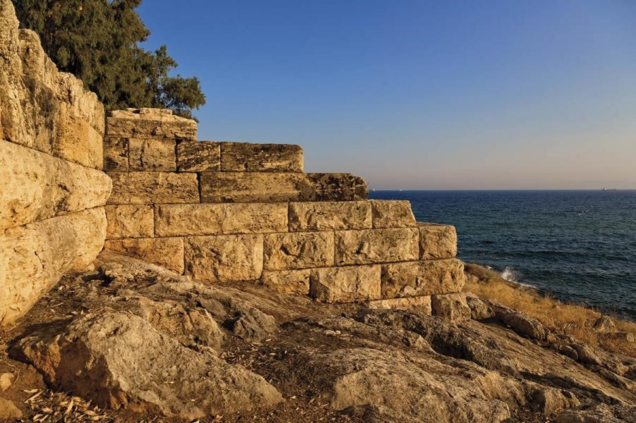

Το θέατρο κατασκευάστηκε στους Μακεδονικούς χρόνους (αρχές του 3ου αι. π.Χ.) και είχε ως πρότυπό του το μεγάλο Διονυσιακό θέατρο της Αθήνας. Το κοίλον του ήταν εν μέρει θεμελιωμένο στο φυσικό βράχο. Στο ανώτερο τμήμα του, όπου δεν υπήρχε ο φυσικός βράχος, τα εδώλια του κοίλου εδράζονταν σε τεχνητή λίθινη θεμελίωση, η οποία καλυπτόταν με χώμα. Δημιουργούνταν δηλαδή ένα είδος τεχνητής επίχωσης για τη θεμελίωση του ανώτερου τμήματος του κοίλου. Το υλικό κατασκευής του θεάτρου ήταν ο γνωστός υποκίτρινος Πειραϊκός λίθος, ο οποίος δυστυχώς είναι αρκετά εύθρυπτος. Από τα εδώλια του αρχαίου θεάτρου δε σώζεται σήμερα κανένα. Η διάμετρος του κοίλου υπολογίζεται στα 66,5 μ. Το αρχαίο θέατρο διέθετε ορχήστρα, διαμέτρου 23,4 μ. Μεγάλος λίθινος αποστραγγιστικός αγωγός απομάκρυνε τα νερά της βροχής από την ορχήστρα. Από το σκηνικό οικοδόμημα διατηρούνται ελάχιστα κατάλοιπα.
Τα ερείπια των οχυρώσεων βρίσκονται σε καλή κατάσταση ως σήμερα. Το 493 π.Χ. ο Θεμιστοκλής ξεκίνησε την κατασκευή οχυρώσεων γύρω από τον Πειραιά. Οι δύο κύριες πύλες των οχυρώσεων βρίσκονται στην είσοδο της σύγχρονης πόλης στην οδό του 34ου Συντάγματος. Η Πύλη του Άστεως είναι η πιο δυτική πύλη, η οποία περικλείεται από τις οδούς Πύλης, Ομηρίδου, Σκλυλίτση και Κολοκοτρώνη. Ο κύριος δρόμος για τις μεταφορές προς την Αθήνα περνούσε μέσα από την Πύλη του Άστεως.
Ο σκοπός κατασκευής των Μακρών Τειχών ήταν η σύνδεση της Αθήνας με το επίνειό της. Τα Μακρά Τείχη (Βόρειο, Φαληρικό και το Μέσο ή Νότιο τείχος) δημιουργούσαν έναν ασφαλή διάδρομο ανάμεσα στην Αθήνα και τον Πειραιά για τον πληθυσμό της Αττικής κατά τον Πελοποννησιακό Πόλεμο. Η Μέση Πύλη, κοντά στην Πύλη του Άστεως, είναι πολύ παρόμοια με το Δίπυλον της Αθήνας, αλλά μικρότερη. Είχε κατασκευαστεί για διακίνηση χρησιμοποιώντας τον διάδρομο των Μακρών Τειχών. Η Ηετιώνεια Πύλη βρίσκεται στη βορεινή πλευρά του κύριου λιμένα, του Κάνθαρου, στην περιοχή της Δραπετσώνας. Το φρούριο της Ηετιωνείας κατασκευάστηκε με σκοπό τον έλεγχο του λιμανιού. Δύο τμήματα του τείχους ξεκινούν απ’ αυτή την πύλη. Η πρώτη στα ανατολικά προς τον λιμένα. Η δεύτερη προς τον εξωτερικό λιμένα. Δύο ισχυροί κυκλικοί πύργοι της ελληνιστικής περιόδου ορθώνονταν στα πλευρά της πύλης. Το τείχος προστατεύεται από μια βαθιά τάφρο σκαμμένη μέσα στον βράχο. Ο παράκτιος τομέας των οχυρώσεων. Κατασκευάστηκε από τον Κόνωνα το 394 π.Χ. και διατηρείται, ως σήμερα, ένα τμήμα του μήκους 2,5 χλμ. κατά μήκος της Πειραϊκής Ακτής. Πολλοί από τους πύργους του τείχους διατηρούνται ως σήμερα.
